library(tidyverse)
theme_set(theme_bw())
dpc <-
tribble(
~t, ~y,
0, 0.1,
7, 1,
14, 9,
21, 25,
28, 80,
35, 98,
42, 99,
49, 99.9
)10 Model fitting
In model fitting for temporal analysis, the objective is to determine which previously-reviewed epidemiological models best fit the data from actual epidemics. Doing so allows us to obtain two key parameters: the initial inoculum and the apparent infection rate.
There are essentially two methods for achieving this: linear regression and non-linear regression modeling. We’ll begin with linear regression, which is computationally simpler. I’ll illustrate the procedure using both built-in R functions and custom functions from the epifitter package (Alves and Del Ponte 2021). Epifitter offers a set of user-friendly functions that can fit and rank the best models for a given epidemic.
To exemplify, we’ll continue examining a previously shown curve that represents the incidence of the tobacco etch virus, a disease affecting peppers, over time. This dataset is featured in Chapter 3 of the book, “Study of Plant Disease Epidemics” (Madden et al. 2017). While the book presents SAS code for certain analyses, we offer an alternative code that accomplishes similar analyses, even if it doesn’t replicate the book’s results exactly.
10.1 Linear regression: single epidemics
dpc |>
ggplot(aes(t, y))+
geom_point(size =3)+
geom_line()+
labs(x = "Time", y = "Disease intensity (%)")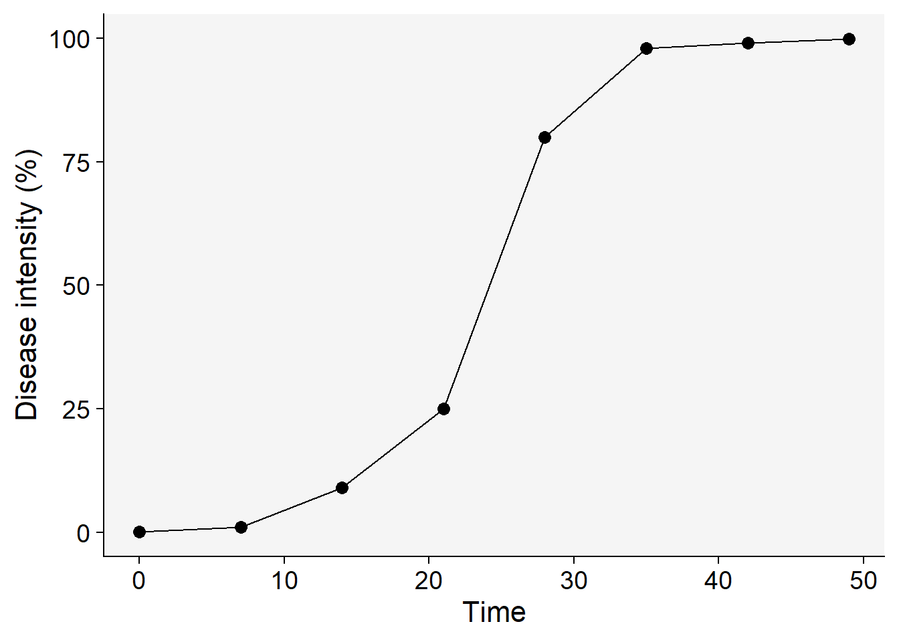
To start, we’ll need to transform the disease intensity (in proportion scale) data according to each of the models we aim to fit. In this instance, we’ll look at the four models discussed in the previous chapter: exponential, monomolecular, logistic, and Gompertz. We can use the mutate() function of dplyr package.
dpc1 <- dpc |>
mutate(y = y/100) |> # transform to proportion
mutate(exponential = log(y),
monomolecular = log(1 / (1 - y)),
logistic = log(y / (1 - y)),
gompertz = -log(-log(y)))
knitr::kable(dpc1) | t | y | exponential | monomolecular | logistic | gompertz |
|---|---|---|---|---|---|
| 0 | 0.001 | -6.9077553 | 0.0010005 | -6.906755 | -1.9326447 |
| 7 | 0.010 | -4.6051702 | 0.0100503 | -4.595120 | -1.5271796 |
| 14 | 0.090 | -2.4079456 | 0.0943107 | -2.313635 | -0.8787739 |
| 21 | 0.250 | -1.3862944 | 0.2876821 | -1.098612 | -0.3266343 |
| 28 | 0.800 | -0.2231436 | 1.6094379 | 1.386294 | 1.4999400 |
| 35 | 0.980 | -0.0202027 | 3.9120230 | 3.891820 | 3.9019387 |
| 42 | 0.990 | -0.0100503 | 4.6051702 | 4.595120 | 4.6001492 |
| 49 | 0.999 | -0.0010005 | 6.9077553 | 6.906755 | 6.9072551 |
Now we can plot the curves using the transformed values regressed against time. The curve that appears most linear, closely coinciding with the regression fit line, is a strong candidate for the best-fitting model. To accomplish this, we’ll first reshape the dataframe into long format, and then generate plots for each of the four models.
dpc2 <- dpc1 |>
pivot_longer(3:6, names_to = "model", values_to = "y2")
dpc2 |>
ggplot(aes(t, y2, color = model))+
geom_point()+
geom_smooth(method = "lm", se = F)+
facet_wrap(~ model)`geom_smooth()` using formula = 'y ~ x'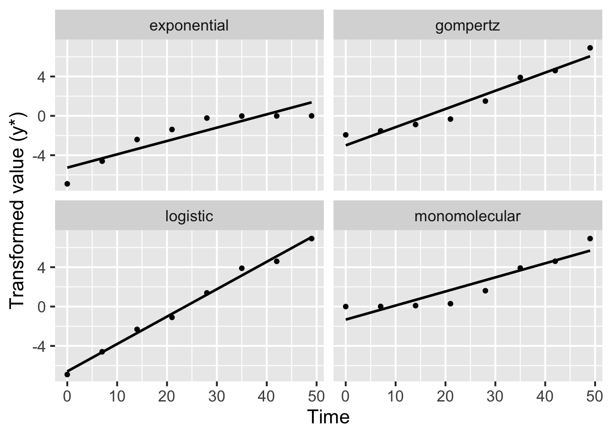
For this particular curve, it’s readily apparent that the logistic model offers the best fit to the data, as evidenced by the data points being closely aligned with the regression line, compared to the other models. However, to make a more nuanced decision between the logistic and Gompertz models—which are both typically used for sigmoid curves—we can rely on additional statistical measures.
Specifically, we can fit a regression model for each and examine key metrics such as the R-squared value and the residual standard error. To further validate the model’s accuracy, we can use Lin’s Concordance Correlation Coefficient to assess how closely the model’s predictions match the actual (transformed) data points.
For this exercise, let’s focus on the logistic and Gompertz models. We’ll start by fitting the logistic model and then move on to analyzing the summary of the regression model.
logistic <- dpc2 |>
filter(model == "logistic")
m_logistic <- lm(y2 ~ t, data = logistic)
# R-squared
summary(m_logistic)$r.squared[1] 0.9923659# RSE
summary(m_logistic)$sigma[1] 0.4523616# calculate the Lin's CCC
library(epiR)
ccc_logistic <- epi.ccc(logistic$y2, predict(m_logistic))
ccc_logistic$rho.c[1] est
1 0.9961683We repeat the procedure for the Gompertz model.
gompertz <- dpc2 |>
filter(model == "gompertz")
m_gompertz <- lm(y2 ~ t, data = gompertz)
# R-squared
summary(m_gompertz)$r.squared[1] 0.9431066# RSE
summary(m_gompertz)$sigma[1] 0.8407922# calculate the Lin's CCC
library(epiR)
ccc_gompertz <- epi.ccc(gompertz$y2, predict(m_gompertz))
ccc_gompertz$rho.c[1] est
1 0.9707204Next, let’s extract the two parameters of interest from each fitted model and incorporate them into the integral form of the respective models. To do this, we’ll need to back-transform the intercept, which represents the initial inoculum. This can be accomplished using specific equations, which we’ll outline next.
| Model | Transformation | Backtranformation |
|---|---|---|
| Exponential | log(y) | exp(y) |
| Monomolecular | log(1 / (1 - y)) | 1 - exp(-y) |
| Logistic | log(y / (1 - y)) | 1 / (1 + exp(-y)) |
| Gompertz | -log(-log(y)) | exp(-exp(-y)) |
rL <- m_logistic$coefficients[2]
rL t
0.2784814 y02 <- m_logistic$coefficients[1]
y0L = 1 / (1 + exp(-y02))
y0L(Intercept)
0.001372758 rG <-m_gompertz$coefficients[2]
rG t
0.1848378 y03 <- m_gompertz$coefficients[1]
y0G <- exp(-exp(-y03))
y0G (Intercept)
1.968829e-09 Now the plot:
logistic |>
ggplot(aes(t, y)) +
geom_point()+
stat_function(
linetype = 2,
fun = function(t) 1 / (1 + ((1 - y0L) / y0L) * exp(-rL * t)))+
stat_function(
linetype = 1,
fun = function(t) exp(log(y0G) * exp(-rG * t))
)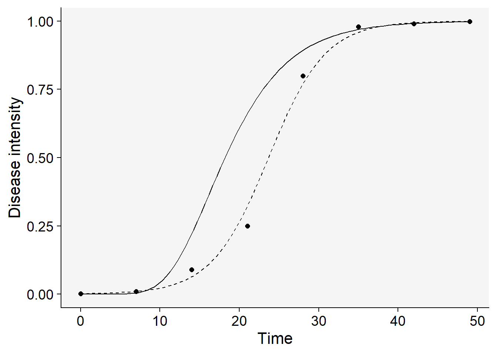
In this case, it’s clear that the logistic model (the solid line above) emerges as the best fit based on our statistical evaluation. The approach for model selection outlined here is straightforward and manageable when dealing with a single epidemic and comparing only two models. However, real-world scenarios often require analyzing multiple curves and fitting various models to each, making manual comparison impractical for selecting a single best-fitting model. To streamline this task, it’s advisable to automate the process using custom functions designed to simplify the coding work involved.
That’s where the epifitter package comes into play! This package offers a range of custom functions designed to automate the model fitting and selection process, making it much more efficient to analyze multiple curves across different epidemics. By using epifitter, one can expedite the statistical evaluation needed to identify the best-fitting models.
10.2 Non linear regression
Alternatively, one can fit a nonlinear model to the data for each combination of curve and model using the nlsLM function in R of the minpack.lm package.
library(minpack.lm)
fit_logistic <- nlsLM(y/100 ~ 1 / (1+(1/y0-1)*exp(-r*t)),
start = list(y0 = 0.01, r = 0.3),
data = dpc)
summary(fit_logistic)
Formula: y/100 ~ 1/(1 + (1/y0 - 1) * exp(-r * t))
Parameters:
Estimate Std. Error t value Pr(>|t|)
y0 0.0003435 0.0002065 1.663 0.147
r 0.3321352 0.0249015 13.338 1.1e-05 ***
---
Signif. codes: 0 '***' 0.001 '**' 0.01 '*' 0.05 '.' 0.1 ' ' 1
Residual standard error: 0.02463 on 6 degrees of freedom
Number of iterations to convergence: 15
Achieved convergence tolerance: 1.49e-08fit_gompertz <- nlsLM(y/100 ~ exp(log(y0/1)*exp(-r*t)),
start = list(y0 = 0.01, r = 0.1),
data = dpc)
summary(fit_gompertz)
Formula: y/100 ~ exp(log(y0/1) * exp(-r * t))
Parameters:
Estimate Std. Error t value Pr(>|t|)
y0 1.647e-14 3.712e-13 0.044 0.96605
r 1.626e-01 3.017e-02 5.391 0.00168 **
---
Signif. codes: 0 '***' 0.001 '**' 0.01 '*' 0.05 '.' 0.1 ' ' 1
Residual standard error: 0.06782 on 6 degrees of freedom
Number of iterations till stop: 50
Achieved convergence tolerance: 1.49e-08
Reason stopped: Number of iterations has reached `maxiter' == 50.We can see that the model coefficients are not the same as those estimated using linear regression. Among other reasons, nls() often uses iterative techniques to estimate parameters, such as the Levenberg-Marquardt algorithm, which may provide different estimates than algebraic methods used in linear regression. While both methods aim to fit a model to data, they do so in ways that have distinct assumptions, strengths, and weaknesses, and this can result in different estimated parameters. Both approaches—nonlinear least squares and linear regression on transformed data—have their own merits and limitations. The choice between the two often depends on various factors like the nature of the data, the underlying assumptions, and the specific requirements of the analysis. For an epidemiologist, the choice might come down to preference, familiarity with the techniques, or specific aims of the analysis. In summary, both methods are valid tools in the toolkit of an epidemiologist or any researcher working on curve fitting and model selection. Understanding the nuances of each can help in making an informed choice tailored to the needs of a particular study.
10.3 epifitter - multiple epidemics
We will now examine three disease progress curves (DPCs) representing the incidence of the tobacco etch virus, a disease affecting peppers. Incidence evaluations were conducted at 7-day intervals up to 49 days. The relevant data can be found in Chapter 4, page 93, of the book “Study of Plant Disease Epidemics” (Madden et al. 2017). To get started, let’s input the data manually and create a data frame. The first column will represent the assessment time, while the remaining columns will correspond to the treatments, referred to as ‘groups’ in the book, ranging from 1 to 3.
10.4 Entering data
library(tidyverse) # essential packages
theme_set(theme_bw(base_size = 16)) # set global themepepper <-
tribble(
~t, ~`1`, ~`2`, ~`3`,
0, 0.08, 0.001, 0.001,
7, 0.13, 0.01, 0.001,
14, 0.78, 0.09, 0.01,
21, 0.92, 0.25, 0.05,
28, 0.99, 0.8, 0.18,
35, 0.995, 0.98, 0.34,
42, 0.999, 0.99, 0.48,
49, 0.999, 0.999, 0.74
) 10.5 Visualize the DPCs
Before proceeding with model selection and fitting, let’s visualize the three epidemics. The code below reproduces quite exactly the top plot of Fig. 4.15 (Madden et al. (2017) page 94). The appraisal of the curves might give us a hint on which models are the best candidates.
Because the data was entered in the wide format (each DPC is in a different column) we need to reshape it to the long format. The pivot_longer() function will do the job of reshaping from wide to long format so we can finally use the ggplot() function to produce the plot.
pepper |>
pivot_longer(2:4, names_to ="treat", values_to = "inc") |>
ggplot (aes(t, inc,
linetype = treat,
shape = treat,
group = treat))+
geom_line(size = 1)+
geom_point(size =3, shape = 16)+
annotate(geom = "text", x = 15, y = 0.84, label = "1")+
annotate(geom = "text", x = 23, y = 0.6, label = "2")+
annotate(geom = "text", x = 32, y = 0.33, label = "3")+
labs(y = "Disease incidence (y)",
x = "Time (days)")+
theme(legend.position = "none")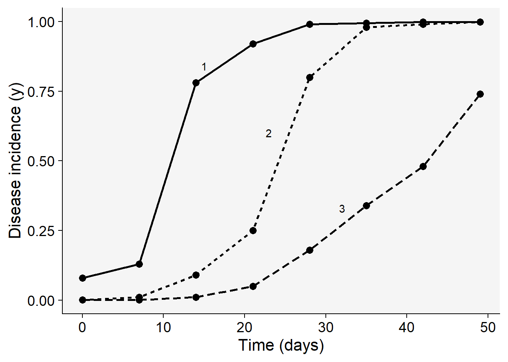
Most of the three curves show a sigmoid shape with the exception of group 3 that resembles an exponential growth, not reaching the maximum value, and thus suggesting an incomplete epidemic. We can easily eliminate the monomolecular and exponential models and decide on the other two non-flexible models: logistic or Gompertz. To do that, let’s proceed to model fitting and evaluate the statistics for supporting a final decision. There are two modeling approaches for model fitting in epifitter: the linear or nonlinear parameter-estimation methods.
10.5.1 epifitter: linear regression
Among the several options offered by epifitter we start with the simplest one, which is to fit a model to a single epidemics using the linear regression approach. For such, the fit_lin() requires two arguments: time (time) and disease intensity (y) each one as a vector stored or not in a dataframe.
Since we have three epidemics, fit_lin() will be use three times. The function produces a list object with six elements. Let’s first look at the Stats dataframe of each of the three lists named epi1 to epi3.
library(epifitter)
epi1 <- fit_lin(time = pepper$t,
y = pepper$`1` )
knitr::kable(epi1$Stats)| CCC | r_squared | RSE | |
|---|---|---|---|
| Gompertz | 0.9848 | 0.9700 | 0.5911 |
| Monomolecular | 0.9838 | 0.9681 | 0.5432 |
| Logistic | 0.9782 | 0.9572 | 0.8236 |
| Exponential | 0.7839 | 0.6447 | 0.6705 |
epi2 <- fit_lin(time = pepper$t,
y = pepper$`2` )
knitr::kable(epi2$Stats)| CCC | r_squared | RSE | |
|---|---|---|---|
| Logistic | 0.9962 | 0.9924 | 0.4524 |
| Gompertz | 0.9707 | 0.9431 | 0.8408 |
| Monomolecular | 0.9248 | 0.8601 | 1.0684 |
| Exponential | 0.8971 | 0.8134 | 1.2016 |
epi3 <- fit_lin(time = pepper$t,
y = pepper$`3` )
knitr::kable(epi3$Stats)| CCC | r_squared | RSE | |
|---|---|---|---|
| Logistic | 0.9829 | 0.9665 | 0.6045 |
| Gompertz | 0.9825 | 0.9656 | 0.2263 |
| Exponential | 0.9636 | 0.9297 | 0.7706 |
| Monomolecular | 0.8592 | 0.7531 | 0.2534 |
The statistics of the model fit confirms our initial guess that the predictions by the logistic or the Gompertz are closer to the observations than predictions by the other models. There is a slight between them based on these statistics. However, to pick one of the models, it is important to inspect the curves with the observed and predicted values to check which model is best for all curves. For such, we can use the plot_fit() function from epifitter to explore visually the fit of the four models to each curve.
plot_fit(epi1)+
ylim(0,1)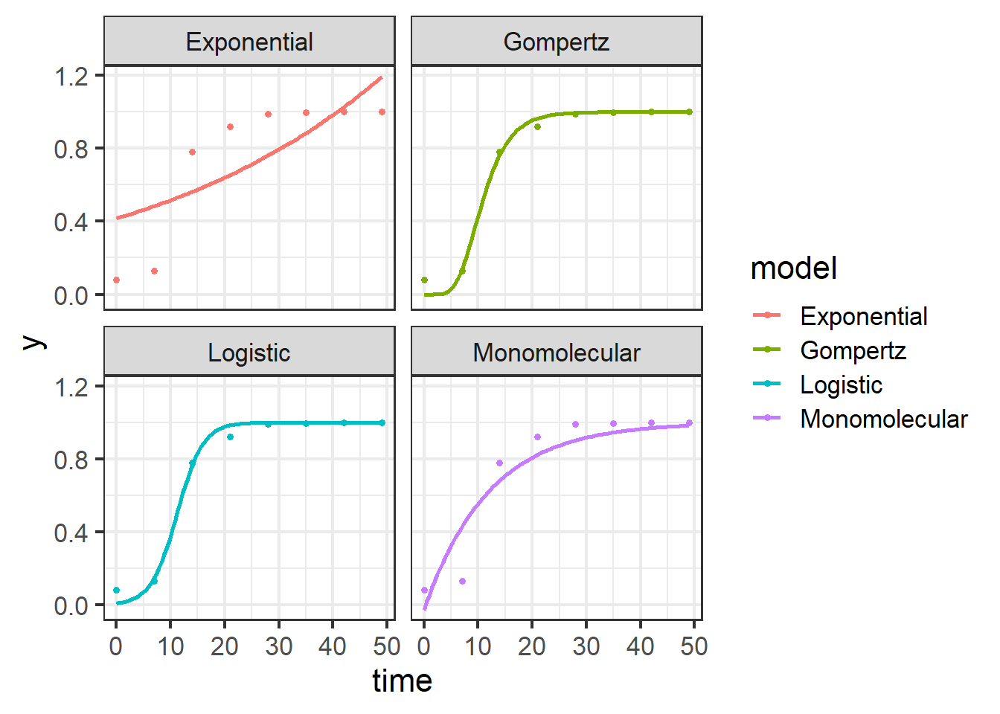
knitr::kable(epi1$stats_all)| best_model | model | r | r_se | r_ci_lwr | r_ci_upr | v0 | v0_se | r_squared | RSE | CCC | y0 | y0_ci_lwr | y0_ci_upr |
|---|---|---|---|---|---|---|---|---|---|---|---|---|---|
| 1 | Gompertz | 0.1815713 | 0.0130299 | 0.1496882 | 0.2134544 | -1.2050364 | 0.3815570 | 0.9700273 | 0.5911056 | 0.9847857 | 0.0355477 | 0.0002059 | 0.2693349 |
| 2 | Monomolecular | 0.1616413 | 0.0119739 | 0.1323423 | 0.1909404 | -0.4625249 | 0.3506326 | 0.9681251 | 0.5431977 | 0.9838044 | -0.5880787 | -2.7452636 | 0.3266178 |
| 3 | Logistic | 0.2104047 | 0.0181544 | 0.1659824 | 0.2548270 | -2.2715851 | 0.5316185 | 0.9572410 | 0.8235798 | 0.9781534 | 0.0935038 | 0.0273207 | 0.2747287 |
| 4 | Exponential | 0.0487634 | 0.0147802 | 0.0125974 | 0.0849293 | -1.8090602 | 0.4328113 | 0.6446531 | 0.6705085 | 0.7839381 | 0.1638080 | 0.0568061 | 0.4723623 |
plot_fit(epi2)+
ylim(0,1)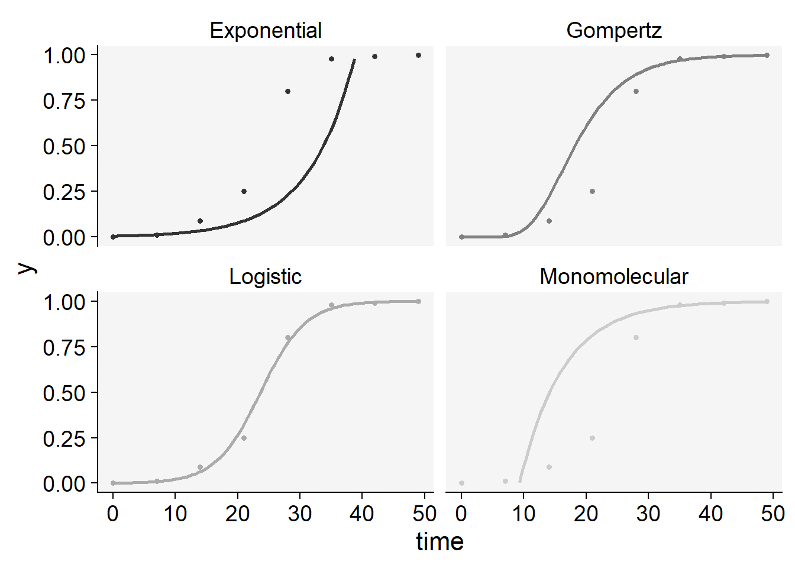
knitr::kable(epi2$stats_all)| best_model | model | r | r_se | r_ci_lwr | r_ci_upr | v0 | v0_se | r_squared | RSE | CCC | y0 | y0_ci_lwr | y0_ci_upr |
|---|---|---|---|---|---|---|---|---|---|---|---|---|---|
| 1 | Logistic | 0.2784814 | 0.0099716 | 0.2540818 | 0.3028809 | -6.589560 | 0.2919981 | 0.9923659 | 0.4523616 | 0.9961683 | 0.0013728 | 0.0006724 | 0.0028007 |
| 2 | Gompertz | 0.1848378 | 0.0185339 | 0.1394871 | 0.2301886 | -2.998021 | 0.5427290 | 0.9431066 | 0.8407922 | 0.9707204 | 0.0000000 | 0.0000000 | 0.0049309 |
| 3 | Monomolecular | 0.1430234 | 0.0235503 | 0.0853979 | 0.2006489 | -1.325645 | 0.6896255 | 0.8600832 | 1.0683633 | 0.9247793 | -2.7646136 | -19.3503499 | 0.3035837 |
| 4 | Exponential | 0.1354579 | 0.0264869 | 0.0706469 | 0.2002689 | -5.263915 | 0.7756171 | 0.8134015 | 1.2015809 | 0.8971003 | 0.0051750 | 0.0007757 | 0.0345258 |
plot_fit(epi3)+
ylim(0,1)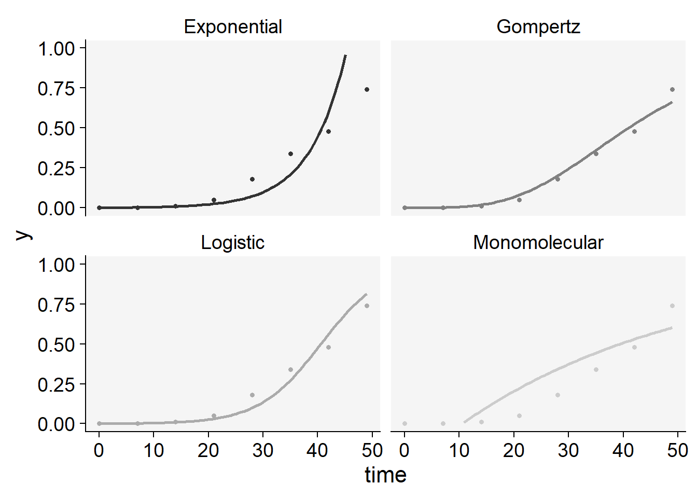
knitr::kable(epi3$stats_all)| best_model | model | r | r_se | r_ci_lwr | r_ci_upr | v0 | v0_se | r_squared | RSE | CCC | y0 | y0_ci_lwr | y0_ci_upr |
|---|---|---|---|---|---|---|---|---|---|---|---|---|---|
| 1 | Logistic | 0.1752146 | 0.0133257 | 0.1426077 | 0.2078215 | -7.1136060 | 0.3902187 | 0.9664590 | 0.6045243 | 0.9829434 | 0.0008133 | 0.0003132 | 0.0021104 |
| 2 | Gompertz | 0.0647145 | 0.0049874 | 0.0525107 | 0.0769182 | -2.2849079 | 0.1460470 | 0.9655894 | 0.2262550 | 0.9824935 | 0.0000541 | 0.0000008 | 0.0010358 |
| 3 | Exponential | 0.1513189 | 0.0169860 | 0.1097556 | 0.1928822 | -6.8629493 | 0.4974031 | 0.9297097 | 0.7705736 | 0.9635747 | 0.0010458 | 0.0003097 | 0.0035322 |
| 4 | Monomolecular | 0.0238957 | 0.0055853 | 0.0102291 | 0.0375624 | -0.2506567 | 0.1635537 | 0.7531307 | 0.2533763 | 0.8591837 | -0.2848689 | -0.9171854 | 0.1389001 |
10.5.2 epifitter: non linear regression
epi11 <- fit_nlin(time = pepper$t,
y = pepper$`1` )
knitr::kable(epi11$Stats)| CCC | r_squared | RSE | |
|---|---|---|---|
| Gompertz | 0.9963 | 0.9956 | 0.0381 |
| Logistic | 0.9958 | 0.9939 | 0.0403 |
| Monomolecular | 0.9337 | 0.8883 | 0.1478 |
| Exponential | 0.7161 | 0.5903 | 0.2770 |
epi22 <- fit_nlin(time = pepper$t,
y = pepper$`2` )
knitr::kable(epi22$Stats)| CCC | r_squared | RSE | |
|---|---|---|---|
| Logistic | 0.9988 | 0.9981 | 0.0246 |
| Gompertz | 0.9904 | 0.9857 | 0.0683 |
| Monomolecular | 0.8697 | 0.8020 | 0.2329 |
| Exponential | 0.8587 | 0.7862 | 0.2413 |
epi33 <- fit_nlin(time = pepper$t,
y = pepper$`3` )
knitr::kable(epi33$Stats)| CCC | r_squared | RSE | |
|---|---|---|---|
| Logistic | 0.9957 | 0.9922 | 0.0270 |
| Gompertz | 0.9946 | 0.9894 | 0.0306 |
| Exponential | 0.9880 | 0.9813 | 0.0445 |
| Monomolecular | 0.8607 | 0.7699 | 0.1426 |
And now we can produce the plot of the fitted curves together with the original incidence dat. The stats_all dataframe shows everything we need regarding the statistics and the values of the parameteres.
plot_fit(epi11)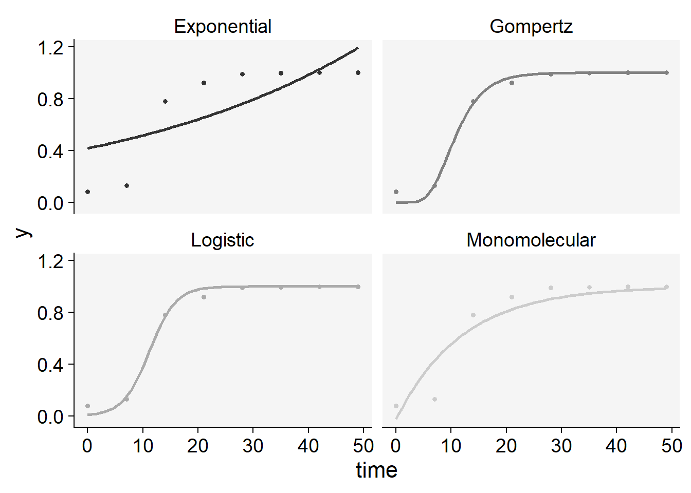
knitr::kable(epi11$stats_all)| model | y0 | y0_se | r | r_se | df | CCC | r_squared | RSE | y0_ci_lwr | y0_ci_upr | r_ci_lwr | r_ci_upr | best_model |
|---|---|---|---|---|---|---|---|---|---|---|---|---|---|
| Gompertz | 0.0000004 | 0.0000017 | 0.2865036 | 0.0313160 | 6 | 0.9962708 | 0.9956357 | 0.0380871 | -0.0000039 | 0.0000046 | 0.2098761 | 0.3631311 | 1 |
| Logistic | 0.0092495 | 0.0060330 | 0.4181351 | 0.0539931 | 6 | 0.9957910 | 0.9938810 | 0.0403179 | -0.0055126 | 0.0240117 | 0.2860188 | 0.5502513 | 2 |
| Monomolecular | -0.0264718 | 0.1405690 | 0.0836206 | 0.0212473 | 6 | 0.9337210 | 0.8883222 | 0.1477596 | -0.3704319 | 0.3174883 | 0.0316303 | 0.1356109 | 3 |
| Exponential | 0.4159606 | 0.1376766 | 0.0215063 | 0.0088658 | 6 | 0.7160769 | 0.5903409 | 0.2770420 | 0.0790782 | 0.7528430 | -0.0001874 | 0.0432000 | 4 |
plot_fit(epi22)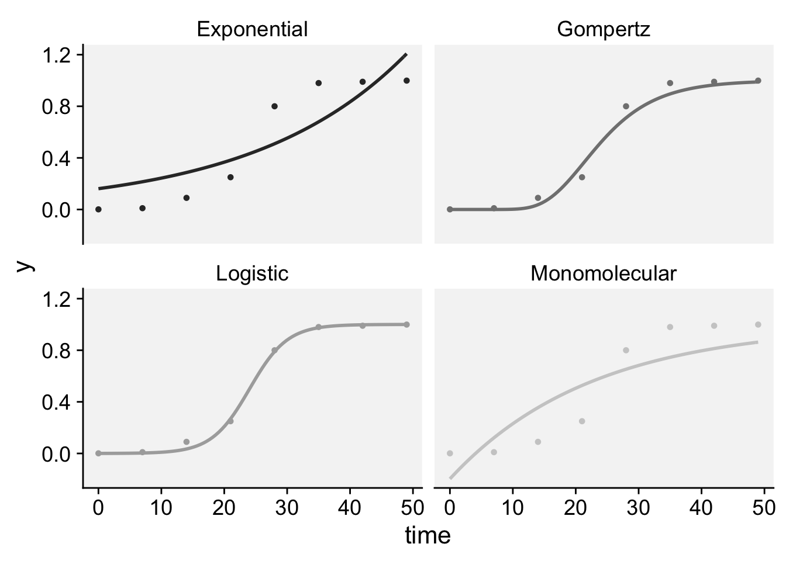
knitr::kable(epi22$stats_all)| model | y0 | y0_se | r | r_se | df | CCC | r_squared | RSE | y0_ci_lwr | y0_ci_upr | r_ci_lwr | r_ci_upr | best_model |
|---|---|---|---|---|---|---|---|---|---|---|---|---|---|
| Logistic | 0.0003435 | 0.0002065 | 0.3321341 | 0.0249014 | 6 | 0.9988253 | 0.9980693 | 0.0246349 | -0.0001618 | 0.0008488 | 0.2712025 | 0.3930657 | 1 |
| Gompertz | 0.0000000 | 0.0000000 | 0.1618741 | 0.0301525 | 6 | 0.9904450 | 0.9856896 | 0.0682506 | 0.0000000 | 0.0000000 | 0.0880937 | 0.2356545 | 2 |
| Monomolecular | -0.1971531 | 0.2005248 | 0.0442060 | 0.0131684 | 6 | 0.8696734 | 0.8020353 | 0.2328814 | -0.6878195 | 0.2935134 | 0.0119840 | 0.0764280 | 3 |
| Exponential | 0.1612234 | 0.0848398 | 0.0410936 | 0.0125521 | 6 | 0.8587176 | 0.7862042 | 0.2412526 | -0.0463722 | 0.3688189 | 0.0103797 | 0.0718076 | 4 |
plot_fit(epi33)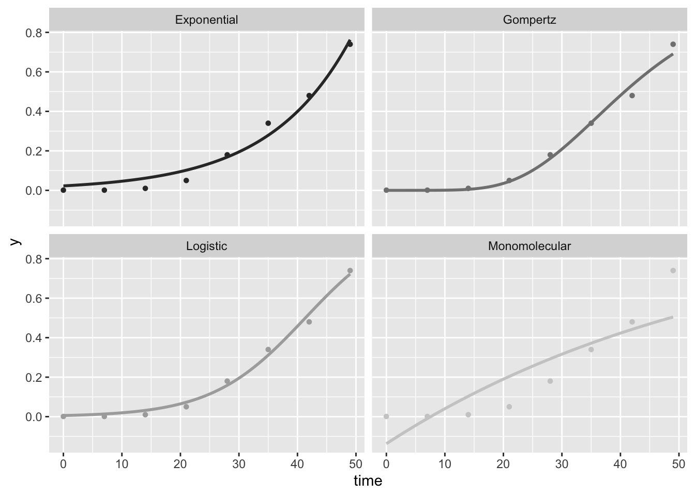
knitr::kable(epi33$stats_all)| model | y0 | y0_se | r | r_se | df | CCC | r_squared | RSE | y0_ci_lwr | y0_ci_upr | r_ci_lwr | r_ci_upr | best_model |
|---|---|---|---|---|---|---|---|---|---|---|---|---|---|
| Logistic | 0.0056634 | 0.0019662 | 0.1249931 | 0.0086711 | 6 | 0.9957129 | 0.9922359 | 0.0270311 | 0.0008522 | 0.0104746 | 0.1037758 | 0.1462105 | 1 |
| Gompertz | 0.0000002 | 0.0000008 | 0.0759837 | 0.0061025 | 6 | 0.9945740 | 0.9894187 | 0.0305883 | -0.0000017 | 0.0000022 | 0.0610515 | 0.0909159 | 2 |
| Exponential | 0.0225267 | 0.0072184 | 0.0718824 | 0.0070479 | 6 | 0.9880169 | 0.9812854 | 0.0445057 | 0.0048638 | 0.0401896 | 0.0546367 | 0.0891281 | 3 |
| Monomolecular | -0.1371485 | 0.1060292 | 0.0169603 | 0.0042530 | 6 | 0.8606954 | 0.7698769 | 0.1426044 | -0.3965926 | 0.1222956 | 0.0065536 | 0.0273669 | 4 |
For multiple epidemics, we can use another handy function that allows us to simultaneously fit the models to multiple DPC data. Different from fit_lin(), fit_multi() requires the data to be structured in the long format where there is a column specifying each of the epidemics.
Let’s then create a new data set called pepper2 using the data transposing functions of the tidyr package.
pepper2 <- pepper |>
pivot_longer(2:4, names_to ="treat", values_to = "inc")Now we fit the models to all DPCs. Note that the name of the variable indicating the DPC code needs to be informed in strata_cols argument. To use the nonlinear regression approach we set nlin argument to TRUE.
epi_all <- fit_multi(
time_col = "t",
intensity_col = "inc",
data = pepper2,
strata_cols = "treat",
nlin = FALSE
)Now let’s select the statistics of model fitting. Again, Epifitter ranks the models based on the CCC (the higher the better) but it is important to check the RSE as well - the lower the better. In fact, the RSE is more important when the goal is prediction.
epi_all$Parameters |>
select(treat, model, best_model, RSE, CCC) treat model best_model RSE CCC
1 1 Gompertz 1 0.5911056 0.9847857
2 1 Monomolecular 2 0.5431977 0.9838044
3 1 Logistic 3 0.8235798 0.9781534
4 1 Exponential 4 0.6705085 0.7839381
5 2 Logistic 1 0.4523616 0.9961683
6 2 Gompertz 2 0.8407922 0.9707204
7 2 Monomolecular 3 1.0683633 0.9247793
8 2 Exponential 4 1.2015809 0.8971003
9 3 Logistic 1 0.6045243 0.9829434
10 3 Gompertz 2 0.2262550 0.9824935
11 3 Exponential 3 0.7705736 0.9635747
12 3 Monomolecular 4 0.2533763 0.8591837The code below calculates the frequency that each model was the best. This would facilitate in the case of many epidemics to analyse.
freq_best <- epi_all$Parameters %>%
filter(best_model == 1) %>%
group_by(treat, model) %>%
summarise(first = n()) %>%
ungroup() |>
count(model)
freq_best # A tibble: 2 × 2
model n
<chr> <int>
1 Gompertz 1
2 Logistic 2We can see that the Logistic model was the best model in two out of three epidemics.
To be more certain about our decision, let’s advance to the final step which is to produce the plots with the observed and predicted values for each assessment time by calling the Data dataframe of the `epi_all list.
epi_all$Data |>
filter(model %in% c("Gompertz", "Logistic")) |>
ggplot(aes(time, predicted, shape = treat)) +
geom_point(aes(time, y)) +
geom_line() +
facet_wrap(~ model) +
coord_cartesian(ylim = c(0, 1)) + # set the max to 0.6
labs(
y = "Disease incidence",
x = "Time (days after emergence)"
)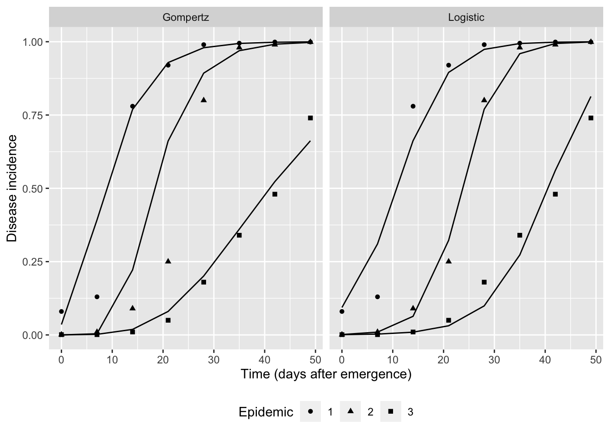
Overall, the logistic model seems a better fit for all the curves. Let’s produce a plot with the prediction error versus time.
epi_all$Data |>
filter(model %in% c("Gompertz", "Logistic")) |>
ggplot(aes(time, predicted -y, shape = treat)) +
geom_point() +
geom_line() +
geom_hline(yintercept = 0, linetype =2)+
facet_wrap(~ model) +
coord_cartesian(ylim = c(-0.4, 0.4)) + # set the max to 0.6
labs(
y = "Prediction error",
x = "Time (days after emergence)",
shape = "Epidemic"
)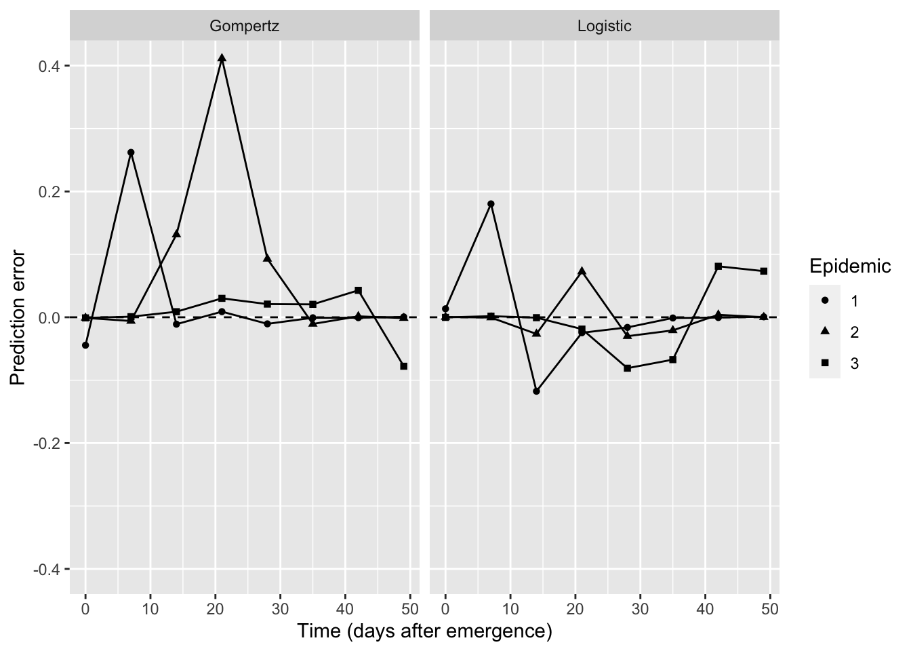
The plots above confirms the logistic model as good fit overall because the errors for all epidemics combined are more scattered around the non-error line.
We can then now extract the parameters of interest of the chosen model. These data are stored in the Parameters data frame of the epi_all list. Let’s filter the Logistic model and apply a selection of the parameters of interest.
epi_all$Parameters |>
filter(model == "Logistic") |>
select(treat, y0, y0_ci_lwr, y0_ci_upr, r, r_ci_lwr, r_ci_upr
) treat y0 y0_ci_lwr y0_ci_upr r r_ci_lwr r_ci_upr
1 1 0.0935037690 0.0273207272 0.274728744 0.2104047 0.1659824 0.2548270
2 2 0.0013727579 0.0006723537 0.002800742 0.2784814 0.2540818 0.3028809
3 3 0.0008132926 0.0003131745 0.002110379 0.1752146 0.1426077 0.2078215We can produce a plot for visual inference on the differences in the parameters.
p1 <- epi_all$Parameters |>
filter(model == "Logistic") |>
ggplot(aes(treat, r)) +
geom_point(size = 3) +
geom_errorbar(aes(ymin = r_ci_lwr, ymax = r_ci_upr),
width = 0,
size = 1
) +
labs(
x = "Epidemic",
y = "r"
)
p2 <- epi_all$Parameters |>
filter(model == "Logistic") |>
ggplot(aes(treat, 1 - exp(-y0))) +
geom_point(size = 3) +
geom_errorbar(aes(ymin = y0_ci_lwr, ymax = y0_ci_upr),
width = 0,
size = 1
) +
labs(
x = "Epidemic",
y = "y0"
)
library(patchwork)
p1 | p2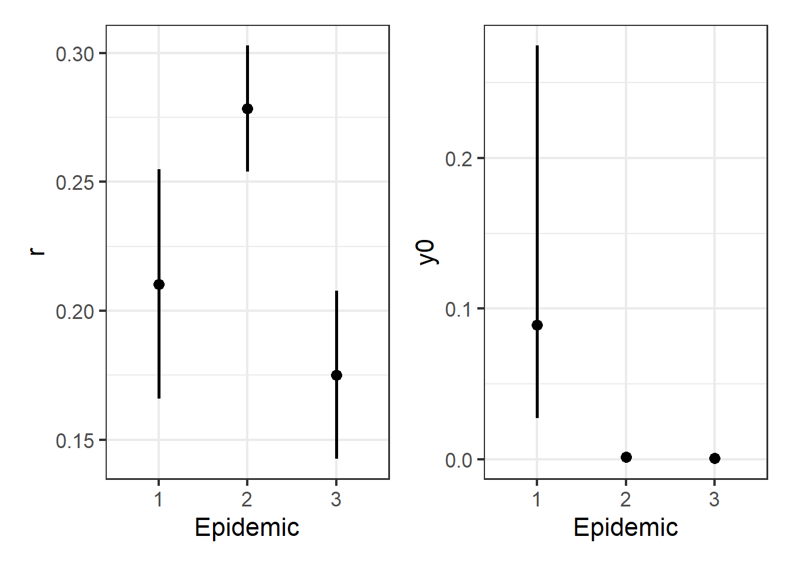
We can compare the rate parameter (slopes) from two separate linear regression models using a t-test. This is sometimes referred to as a “test of parallelism” in the context of comparing slopes. The t-statistic for comparing two slopes with their respective standard errors can be calculated as:
\(t = \frac{\beta_1 - \beta_2}{\sqrt{SE_{\beta_1}^2 + SE_{\beta_2}^2}}\)
This t-statistic follows a t-distribution with ( df = n_1 + n_2 - 4 ) degrees of freedom, where ( n_1 ) and ( n_2 ) are the sample sizes of the two groups. In our case, ( n_1 = n_2 = 8 ), so ( df = 8 + 8 - 4 = 12 ).
Here’s how to perform the t-test for comparing curve 1 and 2.
# Given slopes and standard errors from curve 1 and 2
beta1 <- 0.2104
beta2 <- 0.2784
SE_beta1 <- 0.01815
SE_beta2 <- 0.00997
# Sample sizes for both treatments (n1 and n2)
n1 <- 8
n2 <- 8
# Calculate the t-statistic
t_statistic <- abs(beta1 - beta2) / sqrt(SE_beta1^2 + SE_beta2^2)
# Degrees of freedom
df <- n1 + n2 - 4
# Calculate the p-value
p_value <- 2 * (1 - pt(abs(t_statistic), df))
# Print the results
print(paste("t-statistic:", round(t_statistic, 4)))[1] "t-statistic: 3.2837"print(paste("Degrees of freedom:", df))[1] "Degrees of freedom: 12"print(paste("p-value:", round(p_value, 4)))[1] "p-value: 0.0065"The pt() function in R gives the cumulative distribution function of the t-distribution. The 2 * (1 - pt(abs(t_statistic), df)) line calculates the two-tailed p-value. This will tell us if the slopes are significantly different at your chosen alpha level (commonly 0.05).
10.6 Designed experiments
In the following section, we’ll focus on disease data collected over time from the same plot unit, also known as repeated measures. This data comes from a designed experiment aimed at evaluating and comparing the effects of different treatments.
Specifically, we’ll use a dataset of progress curves found on page 98 of “Study of Plant Disease Epidemics” (Madden et al. 2017). These curves depict the incidence of soybean plants showing symptoms of bud blight, which is caused by the tobacco streak virus. Four different treatments, corresponding to different planting dates, were evaluated using a randomized complete block design with four replicates. Each curve has four time-based assessments.
The data for this study is stored in a CSV file, which we’ll load into our environment using the read_csv() function. Once loaded, we’ll store the data in a dataframe named budblight.
10.6.1 Loading data
budblight <- read_csv("https://raw.githubusercontent.com/emdelponte/epidemiology-R/main/data/bud-blight-soybean.csv")Let’s have a look at the first six rows of the dataset and check the data type for each column. There is an additional column representing the replicates, called block.
budblight# A tibble: 64 × 4
treat time block y
<chr> <dbl> <dbl> <dbl>
1 PD1 30 1 0.1
2 PD1 30 2 0.3
3 PD1 30 3 0.1
4 PD1 30 4 0.1
5 PD1 40 1 0.3
6 PD1 40 2 0.38
7 PD1 40 3 0.36
8 PD1 40 4 0.37
9 PD1 50 1 0.57
10 PD1 50 2 0.52
# … with 54 more rows10.6.2 Visualizing the DPCs
Let’s have a look at the curves and produce a combo plot figure similar to Fig. 4.17 of the book, but without the line of the predicted values.
p3 <- budblight |>
ggplot(aes(
time, y,
group = block,
shape = factor(block)
)) +
geom_point(size = 1.5) +
ylim(0, 0.6) +
theme(legend.position = "none")+
facet_wrap(~treat, ncol =1)+
labs(y = "Disease incidence",
x = "Time (days after emergence)")
p4 <- budblight |>
ggplot(aes(
time, log(1 / (1 - y)),
group = block,
shape = factor(block)
)) +
geom_point(size = 2) +
facet_wrap(~treat, ncol = 1) +
theme(legend.position = "none")+
labs(y = "Transformed incidence", x = "Time (days after emergence)")
p3 | p4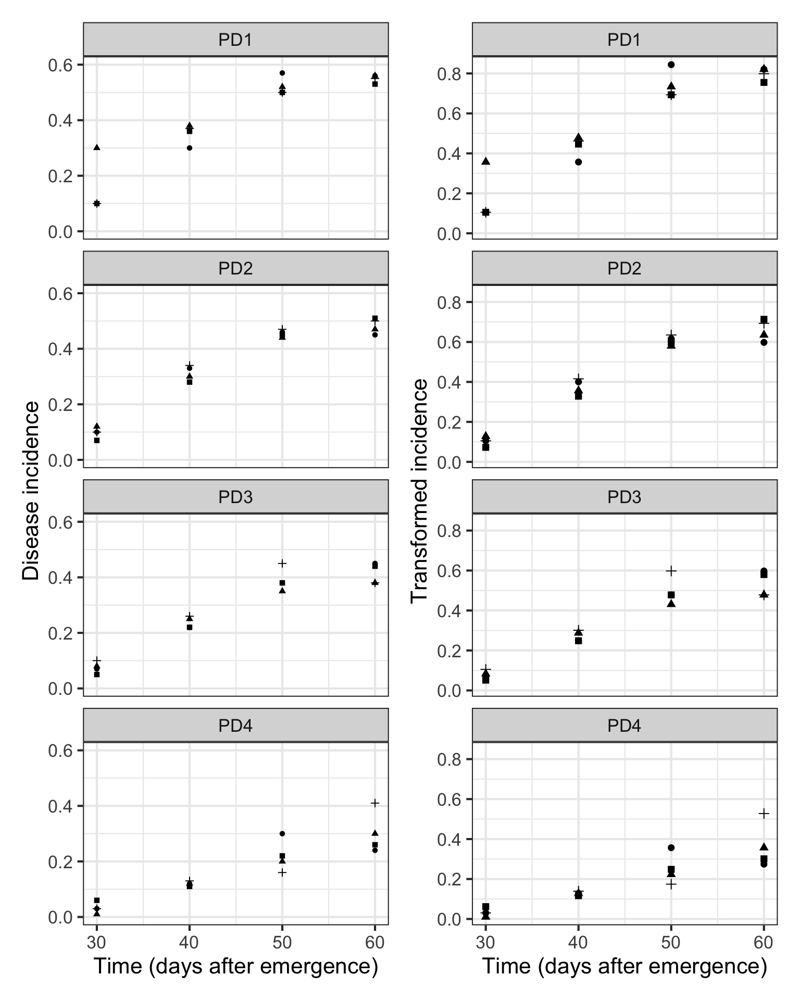
10.6.3 Model fitting
Remember that the first step in model selection is the visual appraisal of the curve data linearized with the model transformation. In the case the curves represent complete epidemics (close to 100%) appraisal of the absolute rate (difference in y between two times) over time is also helpful.
For the treatments above, it looks like the curves are typical of a monocyclic disease (the case of soybean bud blight), for which the monomolecular is usually a good fit, but other models are also possible as well. For this exercise, we will use both the linear and the nonlinear estimation method.
10.6.3.1 Linear regression
For convenience, we use the fit_multi() to handle multiple epidemics. The function returns a list object where a series of statistics are provided to aid in model selection and parameter estimation. We need to provide the names of columns (arguments): assessment time (time_col), disease incidence (intensity_col), and treatment (strata_cols).
lin1 <- fit_multi(
time_col = "time",
intensity_col = "y",
data = budblight,
strata_cols = "treat",
nlin = FALSE
)Let’s look at how well the four models fitted the data. Epifitter suggests the best fitted model (1 to 4, where 1 is best) for each treatment. Let’s have a look at the statistics of model fitting.
lin1$Parameters |>
select(treat, best_model, model, CCC, RSE) treat best_model model CCC RSE
1 PD1 1 Monomolecular 0.9348429 0.09805661
2 PD1 2 Gompertz 0.9040182 0.22226189
3 PD1 3 Logistic 0.8711178 0.44751963
4 PD1 4 Exponential 0.8278055 0.36124036
5 PD2 1 Monomolecular 0.9547434 0.07003116
6 PD2 2 Gompertz 0.9307192 0.17938711
7 PD2 3 Logistic 0.9062012 0.38773023
8 PD2 4 Exponential 0.8796705 0.32676216
9 PD3 1 Monomolecular 0.9393356 0.06832499
10 PD3 2 Gompertz 0.9288436 0.17156394
11 PD3 3 Logistic 0.9085414 0.39051075
12 PD3 4 Exponential 0.8896173 0.33884790
13 PD4 1 Gompertz 0.9234736 0.17474422
14 PD4 2 Monomolecular 0.8945962 0.06486949
15 PD4 3 Logistic 0.8911344 0.52412586
16 PD4 4 Exponential 0.8739618 0.49769642And now we extract values for each parameter estimated from the fit of the monomolecular model.
lin1$Parameters |>
filter(model == "Monomolecular") |>
select(treat, y0, r) treat y0 r
1 PD1 -0.5727700 0.02197351
2 PD2 -0.5220593 0.01902952
3 PD3 -0.4491365 0.01590586
4 PD4 -0.3619898 0.01118047Now we visualize the fit of the monomolecular model (using filter function - see below) to the data together with the observed data and then reproduce the right plots in Fig. 4.17 from the book.
lin1$Data |>
filter(model == "Monomolecular") |>
ggplot(aes(time, predicted)) +
geom_point(aes(time, y)) +
geom_line(size = 0.5) +
facet_wrap(~treat) +
coord_cartesian(ylim = c(0, 0.6)) + # set the max to 0.6
labs(
y = "Disease incidence",
x = "Time (days after emergence)"
)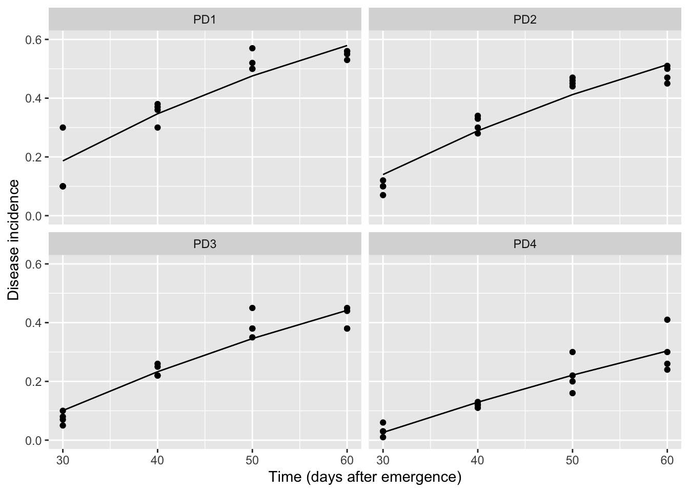
Now we can plot the means and respective 95% confidence interval of the apparent infection rate (\(r\)) and initial inoculum (\(y_0\)) for visual inference.
p5 <- lin1$Parameters |>
filter(model == "Monomolecular") |>
ggplot(aes(treat, r)) +
geom_point(size = 3) +
geom_errorbar(aes(ymin = r_ci_lwr, ymax = r_ci_upr),
width = 0,
size = 1
) +
labs(
x = "Epidemic",
y = "Infection rate (r)"
)
p6 <- lin1$Parameters |>
filter(model == "Monomolecular") |>
ggplot(aes(treat, 1 - exp(-y0))) +
geom_point(size = 3) +
geom_errorbar(aes(ymin = y0_ci_lwr, ymax = y0_ci_upr),
width = 0,
size = 1
) +
labs(
x = "Time",
y = "Initial inoculum (y0)"
)
p5 | p6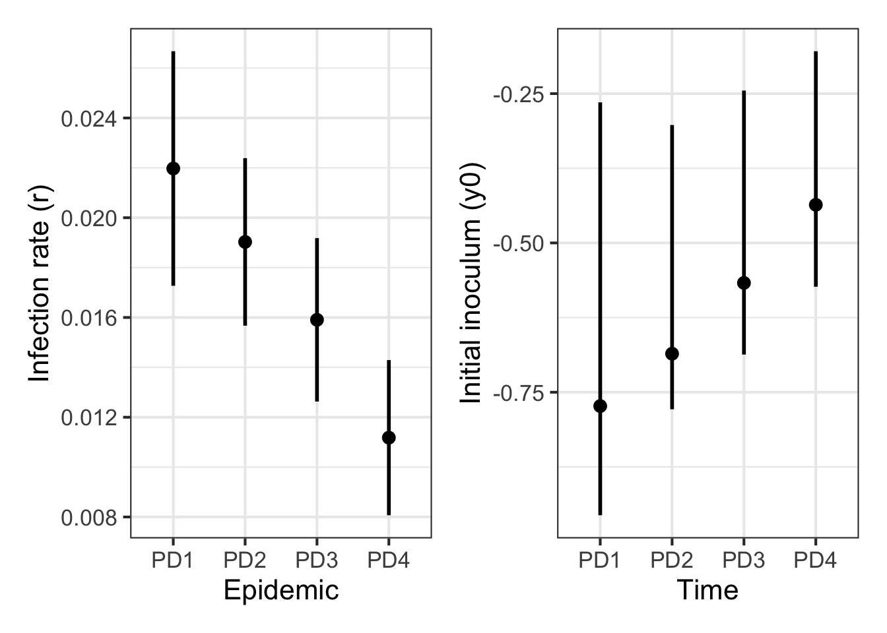
10.6.3.2 Non-linear regression
To estimate the parameters using the non-linear approach, we repeat the same arguments in the fit_multi function, but include an additional argument nlin set to TRUE.
nlin1 <- fit_multi(
time_col = "time",
intensity_col = "y",
data = budblight,
strata_cols = "treat",
nlin = TRUE
)Let’s check statistics of model fit.
nlin1$Parameters |>
select(treat, model, CCC, RSE, best_model) treat model CCC RSE best_model
1 PD1 Monomolecular 0.9382991 0.06133704 1
2 PD1 Gompertz 0.9172407 0.06986307 2
3 PD1 Logistic 0.8957351 0.07700720 3
4 PD1 Exponential 0.8544194 0.08799512 4
5 PD2 Monomolecular 0.9667886 0.04209339 1
6 PD2 Gompertz 0.9348370 0.05726761 2
7 PD2 Logistic 0.9077857 0.06657793 3
8 PD2 Exponential 0.8702365 0.07667322 4
9 PD3 Monomolecular 0.9570853 0.04269129 1
10 PD3 Gompertz 0.9261609 0.05443852 2
11 PD3 Logistic 0.8997106 0.06203037 3
12 PD3 Exponential 0.8703443 0.06891021 4
13 PD4 Monomolecular 0.9178226 0.04595409 1
14 PD4 Gompertz 0.9085579 0.04791331 2
15 PD4 Logistic 0.8940731 0.05083336 3
16 PD4 Exponential 0.8842437 0.05267415 4And now we obtain the two parameters of interest. Note that the values are not the sames as those estimated using linear regression, but they are similar and highly correlated.
nlin1$Parameters |>
filter(model == "Monomolecular") |>
select(treat, y0, r) treat y0 r
1 PD1 -0.7072562 0.02381573
2 PD2 -0.6335713 0.02064629
3 PD3 -0.5048763 0.01674209
4 PD4 -0.3501234 0.01094368p7 <- nlin1$Parameters |>
filter(model == "Monomolecular") |>
ggplot(aes(treat, r)) +
geom_point(size = 3) +
geom_errorbar(aes(ymin = r_ci_lwr, ymax = r_ci_upr),
width = 0,
size = 1
) +
labs(
x = "Epidemic",
y = "Infection rate (r)"
)
p8 <- nlin1$Parameters |>
filter(model == "Monomolecular") |>
ggplot(aes(treat, y0)) +
geom_point(size = 3) +
geom_errorbar(aes(ymin = y0_ci_lwr, ymax = y0_ci_upr),
width = 0,
size = 1
) +
labs(
x = "Epidemic",
y = "Initial inoculum (y0)"
)
p7 | p8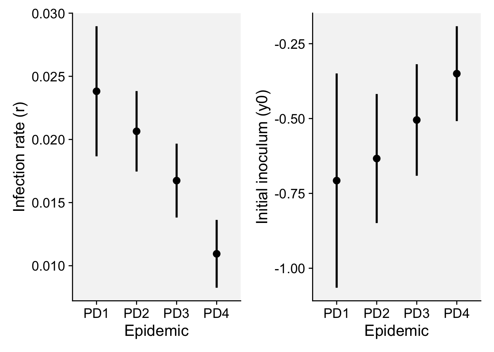